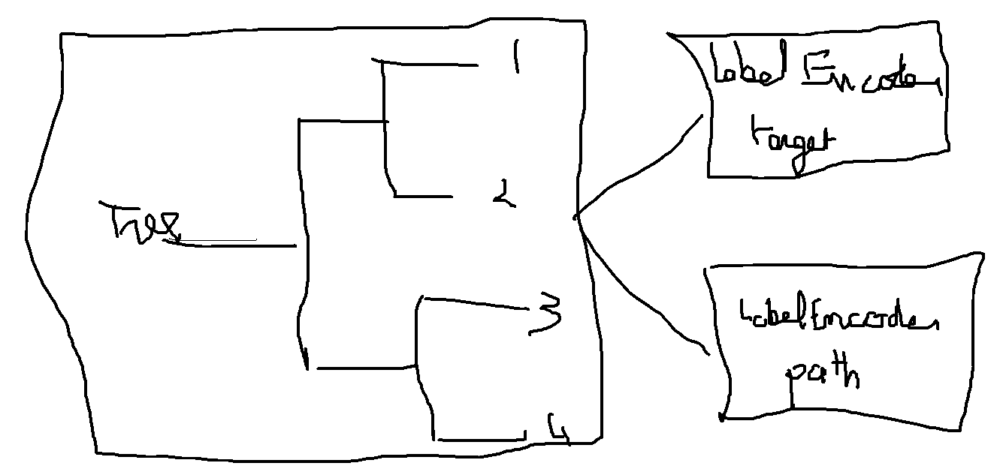

Challenges¶
Using ONNX in production means the prediction function of a model can be implemented with ONNX operators. A runtime must be chosen, one available on the platform the model is deployed. Discrepancies are checked and finally the latency is measured. The first step about the model conversion can be easy if there exists a converting library for this framework supporting all the pieces of the model. If it is not the case, the missing parts must be implemented in ONNX. That may be very time consuming.
What is a converting library?¶
sklearn-onnx converts scikit-learn models into ONNX. It rewrites the prediction function of a model, whatever it is, with ONNX operators using the API introduced above. It ensures that the predictions are equal or at least very close to the expected predictions computed with the original model.
Machine learning libraries usually have their own design. That’s why there exists a specific converting library for each of them. Many of them are listed there: Converting to ONNX format. Here is a short list:
sklearn-onnx: converts models from scikit-learn
tensorflow-onnx: converts models from tensorflow
onnxmltools: converts models from lightgbm, xgboost, pyspark, libsvm
torch.onnx: converts model from pytorch
The main challenge for all these libraries is to keep up the rythm. They must be updated everytime ONNX or the library they support have a new released version. That means three to five new releases per year.
Converting libraries are not compatible among each others. tf2onnx is dedicated to tensorflow and only tensorflow. The same goes for sklearn-onnx specialized into scikit-learn.
One challenge is customization. It is difficult to support custom pieces in a machine learned model. They have to write the specific converter for this piece. Somehow, it is like implementing twice the prediction function. There is one easy case: deep learning frameworks have their own primitives to ensure the same code can be executed on different environment. As long as a custom layer or a subpart is using pieces of pytorch or tensorflow, there is not much to do. It is a different story for scikit-learn. This package does not have its own addition or multiplication, it relies on numpy or scipy. The user must implement its transformer or predictor with ONNX primitives, whether or not it was implemented with numpy. Example Implement a new converter shows what it looks like.
Opsets¶
ONNX releases package with version number like major.minor.fix. Every minor update means the list of operators is different or the signature has changed. It is also associated to an opset, version 1.10 is opset 15, 1.11 will be opset 16. Every ONNX graph should define the opset it follows. Changing this version without updating the operators could make the graph invalid. If the opset is left unspecified, ONNX will consider that the graph is valid for the latest opset.
New opsets usually introduce new operators. A same inference function
could be implemented differently, usually in a more efficient way.
However, the runtime the model is running on may not
support newest opsets or at least not in the installed version.
That’s why every converting library offers the
possibility to create an ONNX graph for a specific opset usually called
target_opset. ONNX language describes simple and complex operators.
Changing the opset is similar to upgrade a library. onnx
and onnx runtimes must support backward compatibility.
Other API¶
Examples in previous sections show that onnx API is very verbose. It is also difficult to get a whole picture of a graph by reading the code unless it is a small one. Almost every converting library has implemented a different API to create a graph, usually more simple, less verbose than the API of onnx package. All API automate the addition of initializers, hide the creation of a name of every intermediate result, deal with different version for different opset.
A class Graph with a method add_node¶
tf2onnx implements a class graph. It rewrites tensorflow function with ONNX operator when ONNX does not have a similar function (see Erf.
sklearn-onnx defines two different API. The first one introduced in that example Two ways to implement a converter follows a similar design that tf2onnx. Following line are extracted from the converter of a linear classifier.
# initializer
coef = scope.get_unique_variable_name('coef')
model_coef = np.array(
classifier_attrs['coefficients'], dtype=np.float64)
model_coef = model_coef.reshape((number_of_classes, -1)).T
container.add_initializer(
coef, proto_dtype, model_coef.shape, model_coef.ravel().tolist())
intercept = scope.get_unique_variable_name('intercept')
model_intercept = np.array(
classifier_attrs['intercepts'], dtype=np.float64)
model_intercept = model_intercept.reshape((number_of_classes, -1)).T
container.add_initializer(
intercept, proto_dtype, model_intercept.shape,
model_intercept.ravel().tolist())
# add nodes
multiplied = scope.get_unique_variable_name('multiplied')
container.add_node(
'MatMul', [operator.inputs[0].full_name, coef], multiplied,
name=scope.get_unique_operator_name('MatMul'))
# [...]
argmax_output_name = scope.get_unique_variable_name('label')
container.add_node('ArgMax', raw_score_name, argmax_output_name,
name=scope.get_unique_operator_name('ArgMax'),
axis=1)
Operator as function¶
The second API shown in Implement a new converter is more compact and defines every ONNX operator as composable functions. The syntax looks like this for KMeans, less verbose and easier to read.
rs = OnnxReduceSumSquare(
input_name, axes=[1], keepdims=1, op_version=opv)
gemm_out = OnnxMatMul(
input_name, (C.T * (-2)).astype(dtype), op_version=opv)
z = OnnxAdd(rs, gemm_out, op_version=opv)
y2 = OnnxAdd(C2, z, op_version=opv)
ll = OnnxArgMin(y2, axis=1, keepdims=0, output_names=out[:1],
op_version=opv)
y2s = OnnxSqrt(y2, output_names=out[1:], op_version=opv)
Imitating existing API¶
A last approach aims at removing one implementation (numpy + onnx). Numpy to ONNX: Create ONNX graphs with an API similar to numpy. Many numpy functions are implemented with ONNX operators. Implementing a transformer with these functions automatically offers the conversion to ONNX for free. The following come from the example linked above. It looks like numpy syntax but every function is converted into ONNX primitives.
import mlprodict.npy.numpy_onnx_impl as nxnp
import mlprodict.npy.numpy_onnx_impl_skl as nxnpskl
@onnxsklearn_class("onnx_graph")
class CustomTransformerOnnx(TransformerMixin, BaseEstimator):
# [...__init__...fit...]
def onnx_graph(self, X):
h = self.hyperplan_.astype(X.dtype)
c = self.centers_.astype(X.dtype)
sign = ((X - c[0]) @ h) >= numpy.array([0], dtype=X.dtype)
cast = sign.astype(X.dtype).reshape((-1, 1))
# Function logistic_regression is not a numpy function.
# It calls the converter for a LogisticRegression
# implemented in sklearn-onnx.
prob0 = nxnpskl.logistic_regression(X, model=self.lr0_)[1]
prob1 = nxnpskl.logistic_regression(X, model=self.lr1_)[1]
prob = prob1 * cast - prob0 * (cast - numpy.array([1], dtype=X.dtype))
label = nxnp.argmax(prob, axis=1)
return MultiOnnxVar(label, prob)
Tricks learned from experience¶
Discrepancies¶
ONNX is strongly typed and optimizes for float32, the most common type in deep learning. Libraries in standard machine learning use both float32 and float64. numpy usually cast to the most generic type, float64. It has no significant impact when the prediction function is contiguous. When it is not, the right type must be used. Example ` Issues when switching to float <https://onnx.ai/sklearn-onnx/auto_tutorial/plot_ebegin_float_double.html>`_ gives more insights on that topic.
Parallelization changes the order of computation. It is usually not significant but it may explain some weird discrepancies. 1 + 1e17 - 1e17 = 0 but 1e17 - 1e17 + 1 = 1. High order of magnitude are rare but not so rare when a model uses the inverse of a matrix.
IsolationForest Trick¶
ONNX only implements a TreeEnsembleRegressor but it does not offer the possibility to retrieve any information about the path the decision followed or statistics to the graph. The trick is to used one forest to predict the leave index and map this leave index one or multiple times with the information needed.
Discretization¶
Looking in which interval a feature falls into. That’s easy to do with numpy but not so easy to do efficiently with ONNX. The fastest way is to use a TreeEnsembleRegressor, a binary search, which outputs the interval index. That’s what this example implements: Converter for WOE.
Contribute¶
onnx repository must be forked and cloned.
Build¶
The windows build requires conda. The following steps might not be up to date. Folder onnx/.azure-pipelines contains the latest instructions.
Windows
The build is easier with Anaconda. First: create an environment. It must be done only once.
conda create --yes --quiet --name py3.9 python=3.9
conda install -n py3.9 -y -c conda-forge numpy libprotobuf=3.16.0
Then build the package:
git submodule update --init --recursive
set ONNX_BUILD_TESTS=1
set ONNX_ML=$(onnx_ml)
set CMAKE_ARGS=-DONNX_USE_PROTOBUF_SHARED_LIBS=ON -DONNX_USE_LITE_PROTO=ON -DONNX_WERROR=ON
python setup.py -q install
python setup.py bdist_wheel
The package can now be installed.
Build the documentation¶
The package must be built first (see previous section).
set ONNX_BUILD_TESTS=1
set ONNX_ML=$(onnx_ml)
set CMAKE_ARGS=-DONNX_USE_PROTOBUF_SHARED_LIBS=ON -DONNX_USE_LITE_PROTO=ON -DONNX_WERROR=ON
python onnx\gen_proto.py -l
python onnx\gen_proto.py -l --ml
python setup.py develop
python onnx\backend\test\cmd_tools.py generate-data
python onnx\backend\test\stat_coverage.py
python onnx\defs\gen_doc.py
set ONNX_ML=0
python onnx\defs\gen_doc.py
set ONNX_ML=1
Update an existing operator¶
All operators are defined in folder onnx/onnx/defs. There are two files in every subfolder, one called defs.cc and another one called old.cc.
defs.cc: contains the most recent definition for every operator
old.cc: contains the deprecated version of the operators in previous opset
Updating an operator means copying the definition from defs.cc to old.cc and updating the existing one in defs.cc.
One file following the pattern onnx/defs/operator_sets*.h must be modified. These headers registers the list of existing operators.
File onnx/defs/schema.h contains the latest opset version. It must updated too if one opset was upgraded.
File onnx/version_converter/convert.h contains rules to apply when converter a node from an opset to the next one. This file may be updated too.
The package must be compiled and the documentation must be generated again to automatically update the markdown documentation and it must be included into the PR.
Then unit test must be updated.
Summary
Modify files defs.cc, old.cc, onnx/defs/operator_sets*.h, onnx/defs/schema.h
Optional: modify file onnx/version_converter/convert.h
Build onnx.
Build the documentation.
Update unit test.
The PR should include the modified files and the modified markdown documentation, usually a subset of docs/docs/Changelog-ml.md, docs/Changelog.md, docs/Operators-ml.md, docs/Operators.md, docs/TestCoverage-ml.md, docs/TestCoverage.md.